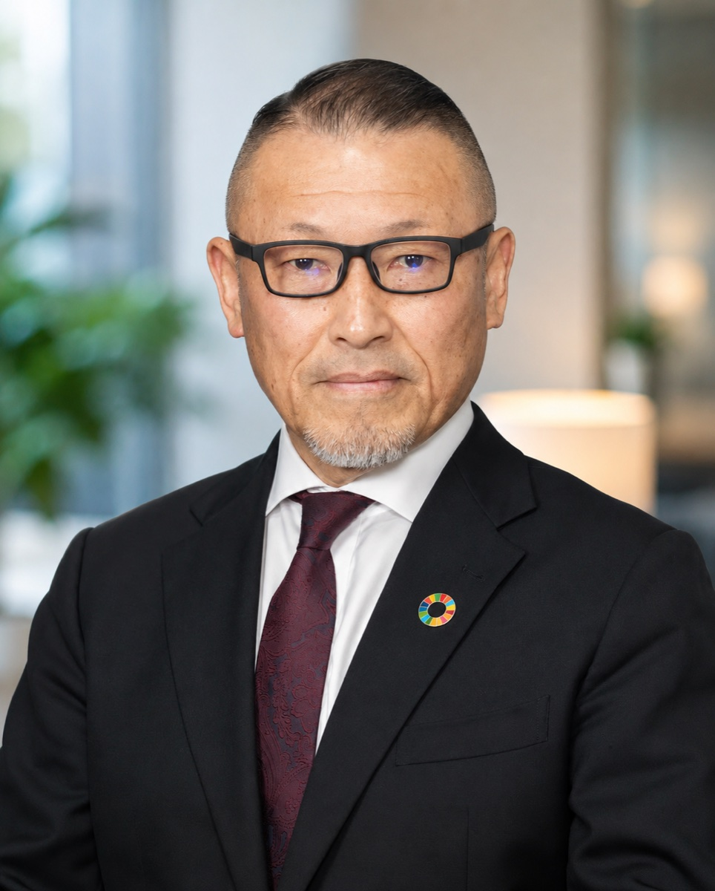

現場で実証された育成知
毎年数百人の若者と向き合い、人が変わる瞬間を実地で重ねてきた経験。理論にとどまらない、再現可能な関わり方を体系化してご提供します。
組織開発・人材育成コンサルティング
人が辞めない組織を、仕組みで実現する。
教育の現場で38年。校長として組織を率いた経験を、
貴社の人材定着と若手育成の「仕組みづくり」に活かします。
課題認識
離職は個人の問題ではなく、多くの場合「組織の構造」に原因があります。よくある根本要因を整理します。
誰がどう育てるかが現場任せで、再現性のある仕組みが存在しない。
管理職が若手世代の価値観をつかめず、適切な対話が生まれていない。
評価・面談・キャリアの見通しが曖昧で、若手が将来像を描けない。
「人を育てる」教育を受けないまま、現場のマネジメントを担っている。
提供価値
毎年数百人の若者と向き合い、人が変わる瞬間を実地で重ねてきた経験。理論にとどまらない、再現可能な関わり方を体系化してご提供します。
教諭・教頭・校長として多様な人材をまとめてきた実務経験。経営層・管理職の悩みに、当事者として実践的な処方を示します。
課題の可視化、仕組みの設計、現場への定着まで。単発の研修で終わらせず、成果が根づくまで伴走します。
アプローチ
現状を可視化する
経営層・管理職・若手へのヒアリングを通じて、離職や育成の停滞を生む構造的要因を特定します。
主な成果物：現状分析・課題マップ
仕組みをつくる
育成体制・面談設計・管理職の関わり方など、貴社に合った「人が育つ仕組み」を具体的に設計します。
主な成果物：育成・面談の設計図／研修プラン
成果を根づかせる
研修・定期面談・運用支援を通じて、設計した仕組みが現場で機能し続けるまで継続的に伴走します。
主な成果物：定着レビュー／改善提案
サービス
人材が定着し、育つ組織の仕組みづくりを継続的に支援。現状診断から育成体制・面談設計・運用定着まで一貫して伴走します。
「人を育てる関わり方」をテーマにした研修・ワークショップ。教育現場の事例を交え、明日から使える実践に落とし込みます。
企業・団体・学校等へ、組織づくりや若者育成をテーマに登壇。聴き手に合わせて内容をカスタマイズします。
料金・実施形態は、ご相談内容に応じて個別にお見積もりいたします。

代表プロフィール
ジュアサリレーションズ 代表／元 北海道野幌高等学校 校長
北海道で高校教諭としてキャリアを開始。教頭を経て、2022年に北海道野幌高等学校の校長に就任。38年にわたり教育の最前線で、数えきれない若者の成長と組織のマネジメントに携わってきました。
2026年3月の役職定年退職を機に、同年4月ジュアサリレーションズを設立。教育現場で培った知見を、企業・団体の人材定着と若手育成に還元することを使命としています。
よくある質問
はい。初回のご相談は無料です。「何から着手すべきか分からない」段階でも、現状を整理するところからご一緒します。
数名のチームから対応しております。規模に応じて、無理のない進め方をご提案します。
オンラインで全国に対応しています。研修・講演は対面・オンラインのいずれも可能です。
ご相談内容・期間により異なるため、ヒアリングのうえ個別にお見積もりいたします。